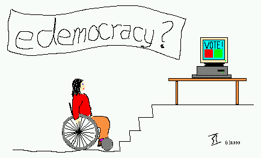

In order to tests that the HTML attribute reflects changes made by javascript, the tester must be able to access the "Longdesc test Pass Page" which consists of the word "Pass" in a heading level 1 followed by a long description of the image. Displaying the "Longdesc test Fail Page" would indicate a failure of this test.
